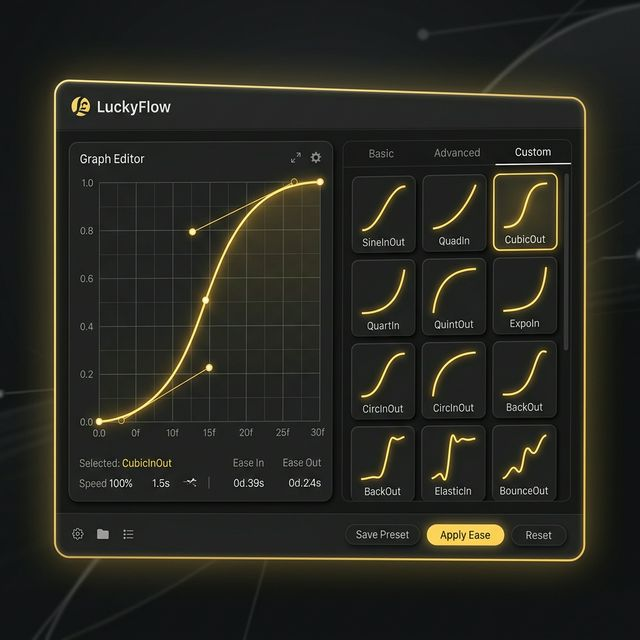
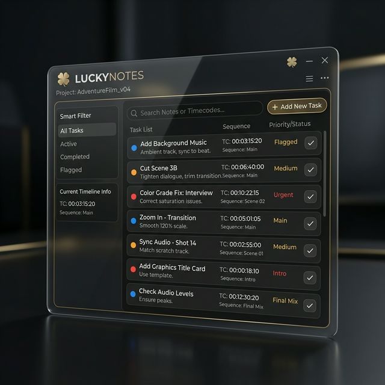

Tools for Creative Editors
LuckyTools is a premium suite of plugins for Adobe Premiere Pro designed to automate tedious tasks, streamline your workflow, and let you focus on what really matters: your creativity. Everything is a shortcut away âš¡
The Power of LuckyTools
Editing & Effects
- Video & Audio Effects
- Video & Audio Transitions
- Video & Audio Presets
Timeline & Clips
- Move Clip to Playhead
- Select All Disabled Clips
- Unnest & Paste
- Adjustment Layer & Solid
Markers & Tracks
- Add Markers (Clip, Sequence, IN/OUT)
- Solo Lock Track
- Solo Mute Track
Animation & Keyframes
- Loop Keyframes (Ping-Pong, Cycle)
- Loop Footage
- Transfer Keyframes
Smart Saving
- Smart Save Project (Auto-versioning)
- Smart Save Sequence
Advanced Utilities
- Ladder & Transform Tools
- Total System Integration
Included Panels

LuckySearch:
Your Central Hub
Access everything from one place. Find tools, effects, presets, and more instantly with an invisible and smart search bar. It's fully connected to all your shortcuts.

LuckyCommands:
Turbo Shortcuts
Assign every action inside LuckyTools to your keyboard. Move faster with zero latency when applying presets, transitions, or effects directly to your clips.

LuckyOrganize:
Structure Folders
Keep your project bins perfectly organized. Instantly generate folder structures or auto-sort your media and sequences based on predefined logical patterns.

LuckyCut:
Rapid Splicing
Speed up the most fundamental part of editing. Slice, ripple, and manage gaps faster than ever, reducing the friction in your initial rough cut.

LuckyPod:
Smart Audio
Streamline your podcast and dialogue setups. Apply complex audio effects, manage track volumes, and conform to audio standards reliably.

LuckyFlow:
Master Curves
Don't settle for linear movement. Apply professional easing adjustments with a single click, instantly elevating the quality of your animations in Premiere Pro.
- >> Ease In / Out Presets
- >> Custom Graph Editor
- >> Bezier Precision
- >> One-Click Apply

LuckyNotes:
Intelligent Timeline
Keep your workflow organized in Premiere. LuckyNotes integrates a visual task system right in your editing panel so you never miss an important adjustment.
- >> Smart Project Notes
- >> Task List System
- >> Status Indicators
- >> Export to Text

LuckyCurves:
Clean Keyframes
Gain fine control over your animation curves, easily cleaning and shaping the paths for the smoothest motion possible without leaving your central toolkit.

LuckyAnchor:
Surgical Control
Precision is key to great editing. Reposition the anchor point of your clips with mathematical exactness, saving minutes of frustrating manual adjustments.
- >> 9-Point Alignment
- >> Custom Offsets
- >> Shuffle Anchor
- >> Real-time Update

LuckyZoom:
Dynamic Views
Navigate your sequences like a pro. Jump between detailed cuts and bird's eye views instantaneously without wrestling with standard shortcuts.